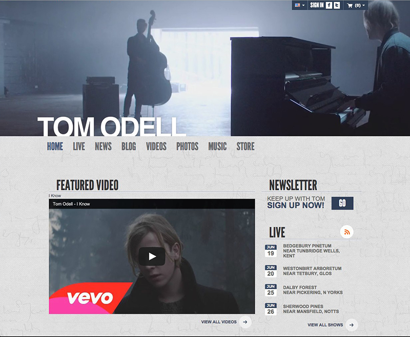

	<section class="portfolio-l-inline">
		<div class="container">
			<div class="row">
				<div class="col col-sm-8 col-xs-12 img-preview">
					
				</div>
				<div class="col col-sm-4 col-xs-12">
					<h2>Tom Odell Offical</h2>
					<span class="block-label">The Challenge</span>
					<p>Build site for Sony Music Entertainment UK artist Tom Odell with a full-width video header.</p>
					<span class="block-label">The Work</span>
					<p>Vetted the design to comply with Drupal 6 theme standard. Directed the team of developers that customized the theme. Added an html5 video element as the entire site header with an image fallback for IE. Added hover animation to all news thumbnails. </p>
					<span class="block-label">Url</span>
					<a href="http://www.tomodell.com/us" target="_blank">tomodell.com/us</a>
					<span class="block-label">Skills</span>
					<span>drupal, multisite, html5, css3</span>
					<hr/>
					<div class="portfolio-nav">
						<a class="fa fa-chevron-left" href="portfolio-slystone.html" title="Previous"></a>
						<a class="fa fa-th" title="List" href="index.html#portfolio"></a>
						<a class="fa fa-chevron-right" href="portfolio-ajordan.html" title="Next"></a>
					</div>						
				</div>							
			</div>
		</div>		
	</section>